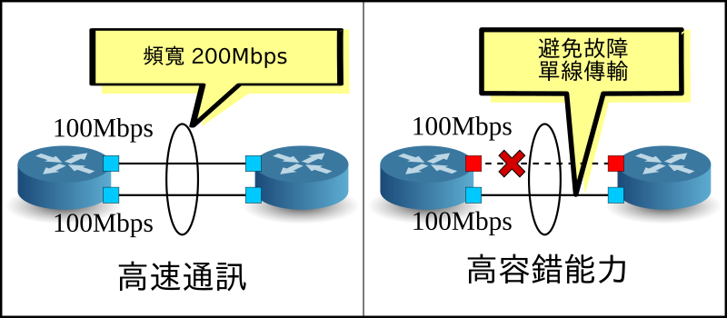

網路聚合（ Link Aggregation ）¶
本章會說明，Ryu 使用的網路聚合功能的實作方法。
網路聚合（ Link Aggregation ）¶
網路聚合（ Link Aggregation ）是由 IEEE802.1AX-2008 所制定的，多條實體線路合併為一條邏輯線路。透過本功能可以讓網路中特定的裝置間通訊速度提升、同時確保備援能力、提升容錯的功能。
{kind=link}
在使用網路聚合功能之前，個別的網路裝置上界面歸屬于特定群組的關係都必須先設定完成。
起始網路聚合功能的方法是將個別的網路裝置設置完成，此為靜態方法。 另外也可以使用 LACP（ Link Aggregation Control Protocol ）通訊協定，此為動態方法。
採用動態方法的時候，每一個網路裝置所相對應的界面會定期的進行 LACP data unit 交換以確認彼此之間的通訊狀況。當 LACP data unit 的交換無法完成，代表網路已經出現故障，使用該網路的裝置出現通訊中斷，此時封包的傳送僅能使用殘存的界面和線路完成。
這樣的做法有個優點，即當有個轉送裝置存在于網路之中，例如 meida converter，當該裝置的另外一端也斷線時可以被偵測到。本章將會說明使用 LACP 進行動態網路聚合的設置。
執行 Ryu 應用程式¶
原始碼的解說將放到後面，首先是執行 Ryu 的網路聚合應用程式。
simple_switch_lacp.py 為 OpenFlow 1.0 專用的應用程式並存在于 Ryu 的原始碼中。 在這邊我們要建立新的 OpenFlow 1.3 版本，即 simple_switch_lacp_13.py。 此應用程式可以為「 交換器（ Switching Hub ） 」中的交換器新增網路聚合功能。
原始碼名稱： simple_switch_lacp_13.py
from ryu.base import app_manager
from ryu.controller import ofp_event
from ryu.controller.handler import CONFIG_DISPATCHER
from ryu.controller.handler import MAIN_DISPATCHER
from ryu.controller.handler import set_ev_cls
from ryu.ofproto import ofproto_v1_3
from ryu.lib import lacplib
from ryu.lib.dpid import str_to_dpid
from ryu.lib.packet import packet
from ryu.lib.packet import ethernet
class SimpleSwitchLacp13(app_manager.RyuApp):
OFP_VERSIONS = [ofproto_v1_3.OFP_VERSION]
_CONTEXTS = {'lacplib': lacplib.LacpLib}
def __init__(self, *args, **kwargs):
super(SimpleSwitchLacp13, self).__init__(*args, **kwargs)
self.mac_to_port = {}
self._lacp = kwargs['lacplib']
self._lacp.add(
dpid=str_to_dpid('0000000000000001'), ports=[1, 2])
@set_ev_cls(ofp_event.EventOFPSwitchFeatures, CONFIG_DISPATCHER)
def switch_features_handler(self, ev):
datapath = ev.msg.datapath
ofproto = datapath.ofproto
parser = datapath.ofproto_parser
# install table-miss flow entry
#
# We specify NO BUFFER to max_len of the output action due to
# OVS bug. At this moment, if we specify a lesser number, e.g.,
# 128, OVS will send Packet-In with invalid buffer_id and
# truncated packet data. In that case, we cannot output packets
# correctly.
match = parser.OFPMatch()
actions = [parser.OFPActionOutput(ofproto.OFPP_CONTROLLER,
ofproto.OFPCML_NO_BUFFER)]
self.add_flow(datapath, 0, match, actions)
def add_flow(self, datapath, priority, match, actions):
ofproto = datapath.ofproto
parser = datapath.ofproto_parser
inst = [parser.OFPInstructionActions(ofproto.OFPIT_APPLY_ACTIONS,
actions)]
mod = parser.OFPFlowMod(datapath=datapath, priority=priority,
match=match, instructions=inst)
datapath.send_msg(mod)
def del_flow(self, datapath, match):
ofproto = datapath.ofproto
parser = datapath.ofproto_parser
mod = parser.OFPFlowMod(datapath=datapath,
command=ofproto.OFPFC_DELETE,
out_port=ofproto.OFPP_ANY,
out_group=ofproto.OFPG_ANY,
match=match)
datapath.send_msg(mod)
@set_ev_cls(lacplib.EventPacketIn, MAIN_DISPATCHER)
def _packet_in_handler(self, ev):
msg = ev.msg
datapath = msg.datapath
ofproto = datapath.ofproto
parser = datapath.ofproto_parser
in_port = msg.match['in_port']
pkt = packet.Packet(msg.data)
eth = pkt.get_protocols(ethernet.ethernet)[0]
dst = eth.dst
src = eth.src
dpid = datapath.id
self.mac_to_port.setdefault(dpid, {})
self.logger.info("packet in %s %s %s %s", dpid, src, dst, in_port)
# learn a mac address to avoid FLOOD next time.
self.mac_to_port[dpid][src] = in_port
if dst in self.mac_to_port[dpid]:
out_port = self.mac_to_port[dpid][dst]
else:
out_port = ofproto.OFPP_FLOOD
actions = [parser.OFPActionOutput(out_port)]
# install a flow to avoid packet_in next time
if out_port != ofproto.OFPP_FLOOD:
match = parser.OFPMatch(in_port=in_port, eth_dst=dst)
self.add_flow(datapath, 1, match, actions)
data = None
if msg.buffer_id == ofproto.OFP_NO_BUFFER:
data = msg.data
out = parser.OFPPacketOut(datapath=datapath, buffer_id=msg.buffer_id,
in_port=in_port, actions=actions, data=data)
datapath.send_msg(out)
@set_ev_cls(lacplib.EventSlaveStateChanged, MAIN_DISPATCHER)
def _slave_state_changed_handler(self, ev):
datapath = ev.datapath
dpid = datapath.id
port_no = ev.port
enabled = ev.enabled
self.logger.info("slave state changed port: %d enabled: %s",
port_no, enabled)
if dpid in self.mac_to_port:
for mac in self.mac_to_port[dpid]:
match = datapath.ofproto_parser.OFPMatch(eth_dst=mac)
self.del_flow(datapath, match)
del self.mac_to_port[dpid]
self.mac_to_port.setdefault(dpid, {})
建置實驗環境¶
讓我們來看一下 OpenFlow 交換器和 Linux host 之間的網路聚合。
為了使用 VM 映像檔，詳細的環境設定和登入方法等請參考 「 交換器（ Switching Hub ） 」。
首先使用 Mininet 製作出如下一般的網路拓璞。

使用 script 來呼叫 Mininet 的 API 進而完成網路拓璞的建構。
原始碼名稱： link_aggregation.py
#!/usr/bin/env python
from mininet.cli import CLI
from mininet.link import Link
from mininet.net import Mininet
from mininet.node import RemoteController
from mininet.term import makeTerm
if '__main__' == __name__:
net = Mininet(controller=RemoteController)
c0 = net.addController('c0')
s1 = net.addSwitch('s1')
h1 = net.addHost('h1')
h2 = net.addHost('h2', mac='00:00:00:00:00:22')
h3 = net.addHost('h3', mac='00:00:00:00:00:23')
h4 = net.addHost('h4', mac='00:00:00:00:00:24')
Link(s1, h1)
Link(s1, h1)
Link(s1, h2)
Link(s1, h3)
Link(s1, h4)
net.build()
c0.start()
s1.start([c0])
net.terms.append(makeTerm(c0))
net.terms.append(makeTerm(s1))
net.terms.append(makeTerm(h1))
net.terms.append(makeTerm(h2))
net.terms.append(makeTerm(h3))
net.terms.append(makeTerm(h4))
CLI(net)
net.stop()
執行該 script 之後會形成 host 1 和交換器 s1 之間有兩條連線的拓璞結構。這時後可以使用 net 命令來進行確認。
ryu@ryu-vm:~$ sudo ./link_aggregation.py
Unable to contact the remote controller at 127.0.0.1:6633
mininet> net
c0
s1 lo: s1-eth1:h1-eth0 s1-eth2:h1-eth1 s1-eth3:h2-eth0 s1-eth4:h3-eth0 s1-eth5:h4-eth0
h1 h1-eth0:s1-eth1 h1-eth1:s1-eth2
h2 h2-eth0:s1-eth3
h3 h3-eth0:s1-eth4
h4 h4-eth0:s1-eth5
mininet>
host h1 的網路聚合設定¶
在這之前在 host h1 的 Linux 作業系統中必須先行設定。
請輸入本節的命令在 host h1 的 xterm 終端機之中。
首先載入 drive module 以完成網路聚合。在 Linux 之中，網路聚合功能是由 bonding drive 所處理。 預先建立 drive 的設定檔 /etc/modprobe.d/bonding.conf 以完成該功能。
檔案名稱: /etc/modprobe.d/bonding.conf
alias bond0 bonding
options bonding mode=4
Node: h1:
root@ryu-vm:~# modprobe bonding
mode = 4 是 LACP 中代表使用動態網路聚合（ dynamic link aggregation ），由於是預設值的關係這邊可以省略。而 LACP data unit 的交換間隔為 SLOW（ 30 秒 ），並且排序的方式是使用目的 MAC 位址來進行。
接著建立一個名為 bond0 的邏輯界面，然後設定 bond0 的 MAC 位址。
Node: h1:
root@ryu-vm:~# ip link add bond0 type bond
root@ryu-vm:~# ip link set bond0 address 02:01:02:03:04:08
把 h1-eth0 和 h1-eth1 的實體網路界面加到已經建立好的邏輯界面群組中。此時先將實體界面設定為 down，然後亂數決定該實體界面成為比較簡單的 MAC 位址之後更新它。
Node: h1:
root@ryu-vm:~# ip link set h1-eth0 down
root@ryu-vm:~# ip link set h1-eth0 address 00:00:00:00:00:11
root@ryu-vm:~# ip link set h1-eth0 master bond0
root@ryu-vm:~# ip link set h1-eth1 down
root@ryu-vm:~# ip link set h1-eth1 address 00:00:00:00:00:12
root@ryu-vm:~# ip link set h1-eth1 master bond0
指定邏輯界面的 IP 位址，這邊指定為 10.0.0.1。由於 h1-eth0 的 IP 位址已經被自動指定所以我們刪除它。
Node: h1:
root@ryu-vm:~# ip addr add 10.0.0.1/8 dev bond0
root@ryu-vm:~# ip addr del 10.0.0.1/8 dev h1-eth0
最後設定邏輯界面為 UP。
Node: h1:
root@ryu-vm:~# ip link set bond0 up
接著確認每一個界面的狀態。
Node: h1:
root@ryu-vm:~# ifconfig
bond0 Link encap:Ethernet HWaddr 02:01:02:03:04:08
inet addr:10.0.0.1 Bcast:0.0.0.0 Mask:255.0.0.0
UP BROADCAST RUNNING MASTER MULTICAST MTU:1500 Metric:1
RX packets:0 errors:0 dropped:0 overruns:0 frame:0
TX packets:10 errors:0 dropped:0 overruns:0 carrier:0
collisions:0 txqueuelen:0
RX bytes:0 (0.0 B) TX bytes:1240 (1.2 KB)
h1-eth0 Link encap:Ethernet HWaddr 02:01:02:03:04:08
UP BROADCAST RUNNING SLAVE MULTICAST MTU:1500 Metric:1
RX packets:0 errors:0 dropped:0 overruns:0 frame:0
TX packets:5 errors:0 dropped:0 overruns:0 carrier:0
collisions:0 txqueuelen:1000
RX bytes:0 (0.0 B) TX bytes:620 (620.0 B)
h1-eth1 Link encap:Ethernet HWaddr 02:01:02:03:04:08
UP BROADCAST RUNNING SLAVE MULTICAST MTU:1500 Metric:1
RX packets:0 errors:0 dropped:0 overruns:0 frame:0
TX packets:5 errors:0 dropped:0 overruns:0 carrier:0
collisions:0 txqueuelen:1000
RX bytes:0 (0.0 B) TX bytes:620 (620.0 B)
lo Link encap:Local Loopback
inet addr:127.0.0.1 Mask:255.0.0.0
UP LOOPBACK RUNNING MTU:16436 Metric:1
RX packets:0 errors:0 dropped:0 overruns:0 frame:0
TX packets:0 errors:0 dropped:0 overruns:0 carrier:0
collisions:0 txqueuelen:0
RX bytes:0 (0.0 B) TX bytes:0 (0.0 B)
邏輯界面 bond0 為 MASTER，實體界面 h1-eth0 和 h1-eth1 為 SLAVE。 而且你可以看到 bond0、h1-eth0 和 h1-eth1 的 MAC 位址全部都是相同的。
確認 bonding driver 的狀態。
Node: h1:
root@ryu-vm:~# cat /proc/net/bonding/bond0
Ethernet Channel Bonding Driver: v3.7.1 (April 27, 2011)
Bonding Mode: IEEE 802.3ad Dynamic link aggregation
Transmit Hash Policy: layer2 (0)
MII Status: up
MII Polling Interval (ms): 100
Up Delay (ms): 0
Down Delay (ms): 0
802.3ad info
LACP rate: slow
Min links: 0
Aggregator selection policy (ad_select): stable
Active Aggregator Info:
Aggregator ID: 1
Number of ports: 1
Actor Key: 33
Partner Key: 1
Partner Mac Address: 00:00:00:00:00:00
Slave Interface: h1-eth0
MII Status: up
Speed: 10000 Mbps
Duplex: full
Link Failure Count: 0
Permanent HW addr: 00:00:00:00:00:11
Aggregator ID: 1
Slave queue ID: 0
Slave Interface: h1-eth1
MII Status: up
Speed: 10000 Mbps
Duplex: full
Link Failure Count: 0
Permanent HW addr: 00:00:00:00:00:12
Aggregator ID: 2
Slave queue ID: 0
確認 LACP data unit 的交換間隔（ LACP rate: slow ）和排序邏輯的設定（ Transmit Hash Policy: layer2 (0) ）。並且確認實體界面 h1-eth0 和 h1-eth1 的 MAC 位址。
以上為 host h1 的事前準備。
設定 OpenFlow 版本¶
交換器 s1 的 OpenFlow 版本設定為 1.3。請在交換器 s1 的 xterm 終端機上輸入下面的指令。
Node: s1:
root@ryu-vm:~# ovs-vsctl set Bridge s1 protocols=OpenFlow13
執行交換器¶
準備完成，接著開始執行 Ryu 應用程式。
在視窗標題為 「Node: c0 (root)」 的 xterm 終端機中執行下列的命令。
Node: c0:
ryu@ryu-vm:~$ ryu-manager ./simple_switch_lacp_13.py
loading app ./simple_switch_lacp_13.py
loading app ryu.controller.ofp_handler
creating context lacplib
instantiating app ./simple_switch_lacp_13.py
instantiating app ryu.controller.ofp_handler
...
host h1 會每 30 秒發送一次 LACP data unit。啟動之後，交換器馬上就會收到 host h1 發送的 LACP data unit，並輸出記錄在 log 之中。
Node: c0:
...
[LACP][INFO] SW=0000000000000001 PORT=1 LACP received.
[LACP][INFO] SW=0000000000000001 PORT=1 the slave i/f has just been up.
[LACP][INFO] SW=0000000000000001 PORT=1 the timeout time has changed.
[LACP][INFO] SW=0000000000000001 PORT=1 LACP sent.
slave state changed port: 1 enabled: True
[LACP][INFO] SW=0000000000000001 PORT=2 LACP received.
[LACP][INFO] SW=0000000000000001 PORT=2 the slave i/f has just been up.
[LACP][INFO] SW=0000000000000001 PORT=2 the timeout time has changed.
[LACP][INFO] SW=0000000000000001 PORT=2 LACP sent.
slave state changed port: 2 enabled: True
...
下面說明 log 的內容。
LACP received.
接受到 LACP data unit。
the slave i/f has just been up.
原本無效的連接埠轉換成有效狀態。
the timeout time has changed.
LACP data unit 的逾時時間變更（ 本例子中原始狀態為 0 秒，變更為 LONG_TIMEOUT_TIME 的 90 秒 ）
LACP sent.
回覆用的 LACP data unit 傳送完畢
slave state changed ...
應用程式接收到 LACP 函式庫中
EventSlaveStateChanged事件訊息（ 事件的詳細內容稍後說明 ）。
交換器對於每一次從 host h1 收到的 LACP data unit 傳送回覆用的 LACP data unit 。
Node: c0:
...
[LACP][INFO] SW=0000000000000001 PORT=1 LACP received.
[LACP][INFO] SW=0000000000000001 PORT=1 LACP sent.
[LACP][INFO] SW=0000000000000001 PORT=2 LACP received.
[LACP][INFO] SW=0000000000000001 PORT=2 LACP sent.
...
確認 Flow Entry 。
Node: s1:
root@ryu-vm:~# ovs-ofctl -O openflow13 dump-flows s1
OFPST_FLOW reply (OF1.3) (xid=0x2):
cookie=0x0, duration=14.565s, table=0, n_packets=1, n_bytes=124, idle_timeout=90, send_flow_rem priority=65535,in_port=2,dl_src=00:00:00:00:00:12,dl_type=0x8809 actions=CONTROLLER:65509
cookie=0x0, duration=14.562s, table=0, n_packets=1, n_bytes=124, idle_timeout=90, send_flow_rem priority=65535,in_port=1,dl_src=00:00:00:00:00:11,dl_type=0x8809 actions=CONTROLLER:65509
cookie=0x0, duration=24.821s, table=0, n_packets=2, n_bytes=248, priority=0 actions=CONTROLLER:65535
在交換器中
- 接收到從 h1 的 h1-eth1（ 接收埠為 s1-eth2 、目的 MAC 位址為 00:00:00:00:00:12) 傳送 LACP data unit（ ethertype 0x8809 ）時就發送 Packet-In 訊息。
- 接收到從 h1 的 h1-eth0（ 接收埠為 s1-eth1 、目的 MAC 位址為 00:00:00:00:00:11) 傳送 LACP data unit（ ethertype 0x8809 ）時就發送 Packet-In 訊息。
- Table-miss Flow Entry 跟「 交換器（ Switching Hub ） 」相同。
以上 3 個 Flow Entry 被新增到交換器之中。
確認網路聚合功能¶
改善傳送速度¶
首先是確認網路聚合的傳送速度。讓我們來看看使用不同的線路來進行通訊的狀況。
首先，從 host h2 向 host h1 發送 ping 封包。
Node: h2:
root@ryu-vm:~# ping 10.0.0.1
PING 10.0.0.1 (10.0.0.1) 56(84) bytes of data.
64 bytes from 10.0.0.1: icmp_req=1 ttl=64 time=93.0 ms
64 bytes from 10.0.0.1: icmp_req=2 ttl=64 time=0.266 ms
64 bytes from 10.0.0.1: icmp_req=3 ttl=64 time=0.075 ms
64 bytes from 10.0.0.1: icmp_req=4 ttl=64 time=0.065 ms
...
當 ping 訊息持續發送的同時，確認交換器 s1 的 Flow Entry 。
Node: s1:
root@ryu-vm:~# ovs-ofctl -O openflow13 dump-flows s1
OFPST_FLOW reply (OF1.3) (xid=0x2):
cookie=0x0, duration=22.05s, table=0, n_packets=1, n_bytes=124, idle_timeout=90, send_flow_rem priority=65535,in_port=2,dl_src=00:00:00:00:00:12,dl_type=0x8809 actions=CONTROLLER:65509
cookie=0x0, duration=22.046s, table=0, n_packets=1, n_bytes=124, idle_timeout=90, send_flow_rem priority=65535,in_port=1,dl_src=00:00:00:00:00:11,dl_type=0x8809 actions=CONTROLLER:65509
cookie=0x0, duration=33.046s, table=0, n_packets=6, n_bytes=472, priority=0 actions=CONTROLLER:65535
cookie=0x0, duration=3.259s, table=0, n_packets=3, n_bytes=294, priority=1,in_port=3,dl_dst=02:01:02:03:04:08 actions=output:1
cookie=0x0, duration=3.262s, table=0, n_packets=4, n_bytes=392, priority=1,in_port=1,dl_dst=00:00:00:00:00:22 actions=output:3
在確認時會新增下面兩個 Flow Entry。 第四和第五 Flow Entry 會有較小的 duration 的值。
分別是
- 若是收到來自第 3 連接埠（ s1-eth3，也就是連接到 h2 的界面 ）向 h1 的 bond0 發送的封包就轉送到第 1 連接埠（ s1-eth1 ）。
- 若是收到來自第 1 連接埠（ s1-eth1 ）向第 2 連接埠發送的封包，就從第 3 連接埠（ s1-eth3 ）轉送出去。
接著你可以看到 h2 和 h1 之間的通訊是使用 s1-eth1 來完成。
接著從 host h3 向 host h1 發送 ping 訊息。
Node: h3:
root@ryu-vm:~# ping 10.0.0.1
PING 10.0.0.1 (10.0.0.1) 56(84) bytes of data.
64 bytes from 10.0.0.1: icmp_req=1 ttl=64 time=91.2 ms
64 bytes from 10.0.0.1: icmp_req=2 ttl=64 time=0.256 ms
64 bytes from 10.0.0.1: icmp_req=3 ttl=64 time=0.057 ms
64 bytes from 10.0.0.1: icmp_req=4 ttl=64 time=0.073 ms
...
在 ping 持續發送時，確認交換器 s1 的 Flow Entry。
Node: s1:
root@ryu-vm:~# ovs-ofctl -O openflow13 dump-flows s1
OFPST_FLOW reply (OF1.3) (xid=0x2):
cookie=0x0, duration=99.765s, table=0, n_packets=4, n_bytes=496, idle_timeout=90, send_flow_rem priority=65535,in_port=2,dl_src=00:00:00:00:00:12,dl_type=0x8809 actions=CONTROLLER:65509
cookie=0x0, duration=99.761s, table=0, n_packets=4, n_bytes=496, idle_timeout=90, send_flow_rem priority=65535,in_port=1,dl_src=00:00:00:00:00:11,dl_type=0x8809 actions=CONTROLLER:65509
cookie=0x0, duration=110.761s, table=0, n_packets=10, n_bytes=696, priority=0 actions=CONTROLLER:65535
cookie=0x0, duration=80.974s, table=0, n_packets=82, n_bytes=7924, priority=1,in_port=3,dl_dst=02:01:02:03:04:08 actions=output:1
cookie=0x0, duration=2.677s, table=0, n_packets=2, n_bytes=196, priority=1,in_port=2,dl_dst=00:00:00:00:00:23 actions=output:4
cookie=0x0, duration=2.675s, table=0, n_packets=1, n_bytes=98, priority=1,in_port=4,dl_dst=02:01:02:03:04:08 actions=output:2
cookie=0x0, duration=80.977s, table=0, n_packets=83, n_bytes=8022, priority=1,in_port=1,dl_dst=00:00:00:00:00:22 actions=output:3
在剛才確認的時候，2 個 Flow Entry 已經被新增。duration值較小的 Flow Entry 為第 5 和第 6 個 Entry。
分別是
- 收到來自第 2 連接埠（ s1-eth2 ）向 h3 發送的封包時就從第 4 連接埠（ s1-eth4 ）轉送出去
- 收到來自第 4 連接埠（ s1-eth4，也就是連接到 h3 的界面 ）向 h1 的 bond0 發送的封包時就從第 2 連接埠（ s1-eth2 ）轉送出去
這樣可以看出 h3 和 h1 之間的通訊是使用 s1-eth2 完成。
當然 host 4 向 host h1 發送的 ping 指令就可以正常動作。 到此為止同樣新的 Flow Entry 會被新增，h4 和 h1 之間的通訊就透過 s1-eth1 來傳送。
| 目的 host | 使用連接埠 |
|---|---|
| h2 | 1 |
| h3 | 2 |
| h4 | 1 |

經過以上的動作，可以確認多條線路的通訊狀態。
提升容錯能力¶
接下來，我們要提升網路聚合的容錯能力。 現在的狀況是 h2、h4 和 h1 之間的通訊是使用 s1-eth2 連接埠， h3 和 h1 的通訊是使用 s1-eth1 連接埠。
在這邊我們把 s1-eth1 從所屬的 s1-eth0 網路聚合群組中分離出來。
Node: h1:
root@ryu-vm:~# ip link set h1-eth0 nomaster
當 h1-eth0 停用時，host h3 向 host h1 的 ping 是無法連通的。 在停止通訊的狀態下經過了 90 秒之後，下面的 log 上會出現 Controller 的動作訊息。
Node: c0:
...
[LACP][INFO] SW=0000000000000001 PORT=1 LACP received.
[LACP][INFO] SW=0000000000000001 PORT=1 LACP sent.
[LACP][INFO] SW=0000000000000001 PORT=2 LACP received.
[LACP][INFO] SW=0000000000000001 PORT=2 LACP sent.
[LACP][INFO] SW=0000000000000001 PORT=2 LACP received.
[LACP][INFO] SW=0000000000000001 PORT=2 LACP sent.
[LACP][INFO] SW=0000000000000001 PORT=2 LACP received.
[LACP][INFO] SW=0000000000000001 PORT=2 LACP sent.
[LACP][INFO] SW=0000000000000001 PORT=1 LACP exchange timeout has occurred.
slave state changed port: 1 enabled: False
...
「LACP exchange timeout has occurred.」表示停止通訊已經逾時， 曾經學習過的 MAC 位址和轉送封包用的 Flow Entry 將全部被刪除， 回到如同剛開機時的初始狀態。
當新的通訊發生時，新的 MAC 位址將會被學習，已存在的線路連結 Flow Entry 將會再次被新增。
host h3 和 host h1 之間的新 Flow Entry 會被新增。
Node: s1:
root@ryu-vm:~# ovs-ofctl -O openflow13 dump-flows s1
OFPST_FLOW reply (OF1.3) (xid=0x2):
cookie=0x0, duration=364.265s, table=0, n_packets=13, n_bytes=1612, idle_timeout=90, send_flow_rem priority=65535,in_port=2,dl_src=00:00:00:00:00:12,dl_type=0x8809 actions=CONTROLLER:65509
cookie=0x0, duration=374.521s, table=0, n_packets=25, n_bytes=1830, priority=0 actions=CONTROLLER:65535
cookie=0x0, duration=5.738s, table=0, n_packets=5, n_bytes=490, priority=1,in_port=3,dl_dst=02:01:02:03:04:08 actions=output:2
cookie=0x0, duration=6.279s, table=0, n_packets=5, n_bytes=490, priority=1,in_port=2,dl_dst=00:00:00:00:00:23 actions=output:5
cookie=0x0, duration=6.281s, table=0, n_packets=5, n_bytes=490, priority=1,in_port=5,dl_dst=02:01:02:03:04:08 actions=output:2
cookie=0x0, duration=5.506s, table=0, n_packets=5, n_bytes=434, priority=1,in_port=4,dl_dst=02:01:02:03:04:08 actions=output:2
cookie=0x0, duration=5.736s, table=0, n_packets=5, n_bytes=490, priority=1,in_port=2,dl_dst=00:00:00:00:00:21 actions=output:3
cookie=0x0, duration=6.504s, table=0, n_packets=6, n_bytes=532, priority=1,in_port=2,dl_dst=00:00:00:00:00:22 actions=output:4
host h3 的 ping 恢復正常。
Node: h3:
...
64 bytes from 10.0.0.1: icmp_req=144 ttl=64 time=0.193 ms
64 bytes from 10.0.0.1: icmp_req=145 ttl=64 time=0.081 ms
64 bytes from 10.0.0.1: icmp_req=146 ttl=64 time=0.095 ms
64 bytes from 10.0.0.1: icmp_req=237 ttl=64 time=44.1 ms
64 bytes from 10.0.0.1: icmp_req=238 ttl=64 time=2.52 ms
64 bytes from 10.0.0.1: icmp_req=239 ttl=64 time=0.371 ms
64 bytes from 10.0.0.1: icmp_req=240 ttl=64 time=0.103 ms
64 bytes from 10.0.0.1: icmp_req=241 ttl=64 time=0.067 ms
...
經過以上的說明，當一部份的線路發生故障的時候，我們可以確認到其他的線路會自動的恢復以進行通訊。
實作 Ryu 的網路聚合功能¶
讓我們來看看如何利用 OpenFlow 實作網路聚合功能。
使用 LCAP 的 link aggregation 的行為會像是 「當 LACP data unit 傳遞正常時，則表示所使用的實體界面為有效狀態」 「反之，當 LACP data unit 傳遞不正常時，則表示所使用的實體界面為停用或無效狀態」 實體界面無效的意思是，該界面並無相關聯的 Flow Entry 存在。 因此透過下面的步驟：
- 實作接收並回覆 LACP data unit
- 在一個固定的時間區間中沒有收到 LACP data unit 時，則刪除該實體界面所使用到及相關聯的 Flow Entry
- 已經無效的實體界面若是收到了 LACP data unit 封包，則設定該界面為有效。
- LACP data unit 以外的封包則比照 「 交換器（ Switching Hub ） 」進行學習及轉送。
經過以上的處理及安裝後，網路聚合基本的動作已經完成。 LACP 相關的部分和不相關的部分已經可以被明顯的區隔出來，對於不相關的部分請參考「 交換器（ Switching Hub ） 」以進行交換器的擴充實作。
在接收到 LACP data unit 時給予回覆這件事情無法單純使用 Flow Entry 來實現。 因此 Packet-In 訊息被用來支援處理 OpenFlow Controller 方面的溝通。
備註
用來交換 LACP data unit 的實體界面被分為兩種角色，主動（ ACTIVE ）與被動（ PASSIVE ）形態。 主動：在固定的時間會發送 LACP data unit ，以確認線路的狀態。 被動：在收到主動狀態發送過來的 LACP data unit 時予以回覆，以確認線路的狀態。
在 Ryu 中的網路聚合應用程式是使用被動模式（ PASSIVE mode ）來實作。
若是在特定的時間內沒有收到 LACP data unit ，則該實體界面視為無效。 會這樣是因為先前 LACP data unit 促使 Packet-In 並進行 Flow Entry 新增時設定了 idle_timeout。 當時間超過該設定值時，發送 FlowRemoved 訊息通知 Controller。Controller 則讓該界面無效。
已經處於無效狀態的界面收到 LACP data unit 的時候的處理為： 接收到 LACP data unit 的時候 Packet-In 訊息的封包會做為該界面的有效或無效的判斷標準，並進行必要的變更。
若實體界面為無效時，OpenFlow Controller 最簡單的處理為「刪除該界面所使用到的 Flow Entry」，但是這樣的條件其實是不充分的。
例如：有一個邏輯界面是由三個實體界面群組化之後所產生，其排序為「依照使用界面的數量排序 MAC 位址」。
| 界面1 | 界面2 | 界面3 |
|---|---|---|
| 剩餘 MAC 位址:0 | 剩餘 MAC 位址:1 | 剩餘 MAC 位址:2 |
然後每一個實體界面所使用的 Flow Entry 分別新增如下。
| 界面1 | 界面2 | 界面3 |
|---|---|---|
| 目的:00:00:00:00:00:00 | 目的:00:00:00:00:00:01 | 目的:00:00:00:00:00:02 |
| 目的:00:00:00:00:00:03 | 目的:00:00:00:00:00:04 | 目的:00:00:00:00:00:05 |
| 目的:00:00:00:00:00:06 | 目的:00:00:00:00:00:07 | 目的:00:00:00:00:00:08 |
因此如果在界面 1 為停用的狀態下，「在有效的界面中以剩餘 MAC 位址數量為準」作為排序的標準，排序結果如下。
| 界面1 | 界面2 | 界面3 |
|---|---|---|
| 無效 | 剩餘 MAC 位址:0 | 剩餘 MAC 位址:1 |
| 界面1 | 界面2 | 界面3 |
|---|---|---|
| 目的:00:00:00:00:00:00 | 目的:00:00:00:00:00:01 | |
| 目的:00:00:00:00:00:02 | 目的:00:00:00:00:00:03 | |
| 目的:00:00:00:00:00:04 | 目的:00:00:00:00:00:05 | |
| 目的:00:00:00:00:00:06 | 目的:00:00:00:00:00:07 | |
| 目的:00:00:00:00:00:08 |
另外，沒有僅使用單一界面 1 的 Flow Entry，在 Flow Entry 修改的同時，也會對界面 2 和界面 3 進行修改。這在實體界面變更為無效的時候需要做，變更為有效的時候同樣也需要。
因此當實體界面在無效與有效之間改變時，該實體界面所屬的邏輯界面所引用到的 Flow Entry 也會一併被進行刪除。
備註
排序的邏輯方法並沒有在規格書中定義，由各家廠商自行實作。 Ryu 的網路聚合應用程式是自行處理排序的部分， 同時也使用相對應的機器所提供的路徑排序。
接下來實作下面的功能。
LACP 函式庫
- 當接收到 LACP data unit 訊息後，製作回覆訊息並傳送
- 當 LACP data unit 的接收中斷後，相對應的實體界面則變更為無效，並通知交換器
- 當再次接收到 LACP data unit 時，相對應的實體界面則變更為有效，並通知交換器
交換器
- 接收到 LACP 函式庫的通知之後，進行初始化以及刪除必要的 Flow Entry
- 接收到 LACP data unit 以外的封包時，像平常一樣學習並進行封包轉送
LACP 函式庫和其所使用的交換器原始碼，都在 Ryu 的原始碼中提供。
ryu/lib/lacplib.py
ryu/app/simple_switch_lacp.py
備註
因為 simple_switch_lacp.py 為 OpenFlow 1.0 所專用的應用程式， 本章所詳細說明的是 「 執行 Ryu 應用程式 」中 simple_switch_lacp_13.py 所對應的 OpenFlow 1.3 版本應用程式。
實作 LACP 函式庫¶
在接下來的章節中，我們來看一下前述的 LACP 函式庫功能如何實作。 說明中所引用的原始碼為部分截取，若要了解全體的樣貌，請參照實際的原始碼。
製作邏輯界面¶
若要使用網路聚合功能，必須要事先設定好哪一個網路是歸屬于哪一個群組。 LACP 函式庫使用下列的方法來進行設定。
def add(self, dpid, ports):
# ...
assert isinstance(ports, list)
assert 2 <= len(ports)
ifs = {}
for port in ports:
ifs[port] = {'enabled': False, 'timeout': 0}
bond = {}
bond[dpid] = ifs
self._bonds.append(bond)
參數的內容說明如下。
dpid
指定 OpenFlow 交換器的 data path ID。
ports
指定要被群組的連接埠編號。
透過呼叫這個方法， LACP 函式庫可以指定特定 data path ID 所屬 OpenFlow 交換器連接埠成為特定的群組。 若是要組成多個群組只要重複的呼叫 add() 方法即可。 當邏輯界面被指定為特定的 MAC 位址時，OpenFlow 交換器所管理相同 MAC 位址的 LOCAL 連接埠會自動的被使用。
小訣竅
有些 OpenFlow 交換器之中，交換器本身就有提供網路聚合的功能（ Open vSwitch…等 ） 在這邊我們並不使用交換器本身的功能，而是使用 OpenFlow Controller 來實現網路聚合的功能。
處理 Packet-In¶
在「 交換器（ Switching Hub ） 」中，目的 MAC 位址在尚未被學習的狀況下，會將接收到的封包進行 Flooding。由於 LACP data unit 僅會在相鄰的網路間進行交換，若是將該封包轉送至其他的網路時網路聚合將會出現異常。 所以 Controller 就進行這樣的處理「若是接收到 Packet-In 來自 LACP data unit 的封包就阻止，LACP data unit 以外的封包就交給交換器繼續後續的動作」，在這樣的操作下 LACP data unit 就會不會出現在交換器上。
@set_ev_cls(ofp_event.EventOFPPacketIn, MAIN_DISPATCHER)
def packet_in_handler(self, evt):
"""PacketIn event handler. when the received packet was LACP,
proceed it. otherwise, send a event."""
req_pkt = packet.Packet(evt.msg.data)
if slow.lacp in req_pkt:
(req_lacp, ) = req_pkt.get_protocols(slow.lacp)
(req_eth, ) = req_pkt.get_protocols(ethernet.ethernet)
self._do_lacp(req_lacp, req_eth.src, evt.msg)
else:
self.send_event_to_observers(EventPacketIn(evt.msg))
事件管理（ Event handler ）跟在「 交換器（ Switching Hub ） 」是相同的。會根據所收到的訊息是否為 LACP data unit 做為接下來處理的準則。
若是包含 LACP data unit 的狀況下，就執行 LACP 函式庫中 LACP data unit 的處理機制。 在不包含 LACP data unit 的狀況下，則呼叫 send_event_to_observers() 方法。 這是定義在 ryu.base.app_manager.RyuApp 類別中，為了發送事件訊息的方法。
在「 交換器（ Switching Hub ） 」當中，我們提到了可以被使用者自行定義由 Ryu 所提供的 OpenFlow 訊息接收事件。上述的原始碼當中有個事件叫做 EventPacketIn 即是由 LACP 函式庫提供來讓使用者自行定義。
class EventPacketIn(event.EventBase):
"""a PacketIn event class using except LACP."""
def __init__(self, msg):
"""initialization."""
super(EventPacketIn, self).__init__()
self.msg = msg
使用者定義的事件是繼承自 ryu.controller.event.EventBase 類別來達成。該類別對於資料的封裝並沒有限制。在``EventPacketIn`` 類別中，若是收到了 Packet-In 訊息就會用 ryu.ofproto.OFPPacketIn 實體來像往常一樣處理。
使用者定義的事件接收方法將在之後提到。
連接埠有效/無效狀態的處理¶
LACP 函式庫的 LACP data unit 處理如下：
- 若接收到 LACP data unit 時，連接埠處於無效狀態，這時候會進行狀態的變更，並發送事件通知。
- 若停止通訊的逾時設定值已經被改變時，收到 LACP data unit 封包後就發送 Packet-In 的 Flow Entry 將會再次被新增。
- 接收 LACP data unit 後的回應、回覆及傳送。
第二點的處理會在稍後的 「 新增 Flow Entry - 收到 LACP data unit 時發送 Packet-In 」 描述， 第三點的處理會在稍後的 「 傳送/接收 LACP data unit 的處理 」說明。 接下來說明第一點的處理流程。
def _do_lacp(self, req_lacp, src, msg):
# ...
# when LACP arrived at disabled port, update the status of
# the slave i/f to enabled, and send a event.
if not self._get_slave_enabled(dpid, port):
self.logger.info(
"SW=%s PORT=%d the slave i/f has just been up.",
dpid_to_str(dpid), port)
self._set_slave_enabled(dpid, port, True)
self.send_event_to_observers(
EventSlaveStateChanged(datapath, port, True))
_get_slave_enabled() 方法是用來取得指定的交換器和指定的連接埠狀態為有效或無效。 _set_slave_enabled() 方法是用來設定指定的交換器和指定的連接埠狀態為有效或無效。
在上述的原始碼中，當無效狀態的連接埠接收到了 LACP data unit 時，連接埠的狀態會進行改變並且呼叫 EventSlaveStateChanged 發送訊息，意即表示連接埠狀態已經改變。
class EventSlaveStateChanged(event.EventBase):
"""a event class that notifies the changes of the statuses of the
slave i/fs."""
def __init__(self, datapath, port, enabled):
"""initialization."""
super(EventSlaveStateChanged, self).__init__()
self.datapath = datapath
self.port = port
self.enabled = enabled
除了有效事件之外，當 無效發生時 EventSlaveStateChanged 事件也會被觸發並發送。
當連接埠無效時所需執行的動作在 「 接收 FlowRemoved 訊息時的處理 」 中實作。
EventSlaveStateChanged 類別包含以下的資訊
- 連接埠的發生狀態變更時所在的 OpenFlow 交換器
- 有效/無效的狀態改變時的連接埠編號
- 改變後的狀態
新增 Flow Entry - 收到 LACP data unit 時發送 Packet-In¶
LACP data unit 的傳送間隔定義為 FAST（ 每隔 1 秒 ）和 SLOW（ 每隔 30 秒 ）2 種。 在網路聚合的規格中，傳送間隔的 3 倍時間若是無任何通訊發生時，則該界面將自該群組移除，不再使用于封包的傳送。
LACP 函式庫中透過設定 Flow Entry 來達到監視通訊的狀態，即當接受到 LACP data unit 時觸發 Packet-In 並進行 Flow Entry 設定，即為 3 倍傳送間隔（ SHORT_TIMEOUT_TIME 3 秒、LONG_TIMEOUT_TIME 90 秒 ）的 idle_timeout。
當傳送間隔的設定值改變時，就必須要重新設定 idle_timeout 的時間，因此實作 LACP 函式庫如下。
def _do_lacp(self, req_lacp, src, msg):
# ...
# set the idle_timeout time using the actor state of the
# received packet.
if req_lacp.LACP_STATE_SHORT_TIMEOUT == \
req_lacp.actor_state_timeout:
idle_timeout = req_lacp.SHORT_TIMEOUT_TIME
else:
idle_timeout = req_lacp.LONG_TIMEOUT_TIME
# when the timeout time has changed, update the timeout time of
# the slave i/f and re-enter a flow entry for the packet from
# the slave i/f with idle_timeout.
if idle_timeout != self._get_slave_timeout(dpid, port):
self.logger.info(
"SW=%s PORT=%d the timeout time has changed.",
dpid_to_str(dpid), port)
self._set_slave_timeout(dpid, port, idle_timeout)
func = self._add_flow.get(ofproto.OFP_VERSION)
assert func
func(src, port, idle_timeout, datapath)
# ...
_get_slave_timeout() 方法可以用來取得指定的交換器之指定連接埠的 idle_timeout 數值。 _set_slave_timeout() 方法可以用來設定指定的交換器之指定連接埠的 idle_timeout 數值。
由於初始狀態和移除自網路聚合群組的情況下 idle_timeout 為 0，因此接收到新的 LACP data unit 時，傳送間隔將會根據設定被新增到 Flow Entry 中。
依據所使用的 OpenFlow 版本不同 OFPFlowMod 類別建構子的參數也不盡相同，因此必須取得所對應版本 Flow Entry 的方法。以下是採用 OpenFlow 1.2 之後所使用的 Flow Entry 新增方法。
def _add_flow_v1_2(self, src, port, timeout, datapath):
"""enter a flow entry for the packet from the slave i/f
with idle_timeout. for OpenFlow ver1.2 and ver1.3."""
ofproto = datapath.ofproto
parser = datapath.ofproto_parser
match = parser.OFPMatch(
in_port=port, eth_src=src, eth_type=ether.ETH_TYPE_SLOW)
actions = [parser.OFPActionOutput(
ofproto.OFPP_CONTROLLER, ofproto.OFPCML_MAX)]
inst = [parser.OFPInstructionActions(
ofproto.OFPIT_APPLY_ACTIONS, actions)]
mod = parser.OFPFlowMod(
datapath=datapath, command=ofproto.OFPFC_ADD,
idle_timeout=timeout, priority=65535,
flags=ofproto.OFPFF_SEND_FLOW_REM, match=match,
instructions=inst)
datapath.send_msg(mod)
上述的原始碼為「接收到來自連接的界面所發送的 LACP data unit 時發送 Packet-In」所設定的 Flow Entry ，用於在最高的優先權情況下監視停止通訊的狀態。
傳送/接收 LACP data unit 的處理¶
接收到 LACP data unit 時，進行「 連接埠有效/無效狀態的處理 」或 「 新增 Flow Entry - 收到 LACP data unit 時發送 Packet-In 」處理以及回覆用的 LACP data unit 產生及發送。
def _do_lacp(self, req_lacp, src, msg):
# ...
# create a response packet.
res_pkt = self._create_response(datapath, port, req_lacp)
# packet-out the response packet.
out_port = ofproto.OFPP_IN_PORT
actions = [parser.OFPActionOutput(out_port)]
out = datapath.ofproto_parser.OFPPacketOut(
datapath=datapath, buffer_id=ofproto.OFP_NO_BUFFER,
data=res_pkt.data, in_port=port, actions=actions)
datapath.send_msg(out)
上述的原始碼中，_create_response() 方法是用來產生回覆用的封包。 其中使用 _create_lacp() 方法則是用來產生回覆用的 LACP data unit 。 已經完成的回覆用封包則根據所接收的 LACP data unit 發送 Packet-Out。
LACP data unit 中發送端（ Actor ）的資訊和接收端（ Partner ）的資訊已經被設定完成。 從接收到的 LACP data unit 可以得到發送端的資訊，因此在製作回覆用的封包時，可以設定在接收端。
def _create_lacp(self, datapath, port, req):
"""create a LACP packet."""
actor_system = datapath.ports[datapath.ofproto.OFPP_LOCAL].hw_addr
res = slow.lacp(
# ...
partner_system_priority=req.actor_system_priority,
partner_system=req.actor_system,
partner_key=req.actor_key,
partner_port_priority=req.actor_port_priority,
partner_port=req.actor_port,
partner_state_activity=req.actor_state_activity,
partner_state_timeout=req.actor_state_timeout,
partner_state_aggregation=req.actor_state_aggregation,
partner_state_synchronization=req.actor_state_synchronization,
partner_state_collecting=req.actor_state_collecting,
partner_state_distributing=req.actor_state_distributing,
partner_state_defaulted=req.actor_state_defaulted,
partner_state_expired=req.actor_state_expired,
collector_max_delay=0)
self.logger.info("SW=%s PORT=%d LACP sent.",
dpid_to_str(datapath.id), port)
self.logger.debug(str(res))
return res
接收 FlowRemoved 訊息時的處理¶
在指定的傳送間隔時間中沒有進行 LACP data unit 的收送時，OpenFlow 交換器會發送 FlowRemoved 方法通知 OpenFlow Controller。
@set_ev_cls(ofp_event.EventOFPFlowRemoved, MAIN_DISPATCHER)
def flow_removed_handler(self, evt):
"""FlowRemoved event handler. when the removed flow entry was
for LACP, set the status of the slave i/f to disabled, and
send a event."""
msg = evt.msg
datapath = msg.datapath
ofproto = datapath.ofproto
dpid = datapath.id
match = msg.match
if ofproto.OFP_VERSION == ofproto_v1_0.OFP_VERSION:
port = match.in_port
dl_type = match.dl_type
else:
port = match['in_port']
dl_type = match['eth_type']
if ether.ETH_TYPE_SLOW != dl_type:
return
self.logger.info(
"SW=%s PORT=%d LACP exchange timeout has occurred.",
dpid_to_str(dpid), port)
self._set_slave_enabled(dpid, port, False)
self._set_slave_timeout(dpid, port, 0)
self.send_event_to_observers(
EventSlaveStateChanged(datapath, port, False))
當接收到 FlowRemoved 方法後，就會使用 _set_slave_enabled() 方法設定連接埠的狀態為無效，使用 _set_slave_timeout() 方法設定 idle_timeout 值為 0，使用 send_event_to_observers() 方法發送 EventSlaveStateChanged 訊息。
應用程式的實作¶
現在說明「 執行 Ryu 應用程式 」中所提到的 OpenFlow 1.3 對應的網路聚合應用程式（ simple_switch_lacp_13.py ）和 「 交換器（ Switching Hub ） 」中的交換器差異點。
設定「_CONTEXTS」¶
繼承自 ryu.base.app_manager.RyuApp 的 Ryu 應用程式若要啟動其他的應用程式的話，就必須在 「_CONTEXTS」目錄中設定。在啟動其他的應用程式時，會使用另外的執行緒。在這邊我們設定 LACP 函式庫中的 LacpLib 類別名稱為「lacplib」並放在 「_CONTEXTS」當中。
from ryu.lib import lacplib
# ...
class SimpleSwitchLacp13(app_manager.RyuApp):
OFP_VERSIONS = [ofproto_v1_3.OFP_VERSION]
_CONTEXTS = {'lacplib': lacplib.LacpLib}
# ...
被設定在 「_CONTEXTS」 中的應用程式可以從 __init__() 方法中的 kwargs 取得實體。
# ...
def __init__(self, *args, **kwargs):
super(SimpleSwitchLacp13, self).__init__(*args, **kwargs)
self.mac_to_port = {}
self._lacp = kwargs['lacplib']
# ...
函式庫的初始化設定¶
初始化設定在「_CONTEXTS」中的 LACP 函式庫。透過執行 LACP 函式庫提供的 add() 方法來完成初始設定。設定的內容如下：
| 名稱 | 參數值 | 說明 |
|---|---|---|
| dpid | str_to_dpid(‘0000000000000001’) | data path ID |
| ports | [1, 2] | 群組化的連接埠列表 |
根據以上的設定，data path ID 為 「0000000000000001」 的 OpenFlow 交換器的連接埠 1 和連接埠 2 整合為一個網路聚合群組。
# ...
self._lacp = kwargs['lacplib']
self._lacp.add(
dpid=str_to_dpid('0000000000000001'), ports=[1, 2])
# ...
使用者自行定義事件的接收方法¶
在`實作 LACP 函式庫`_ 我們已經說明，在 LACP 函式庫中處理發送 Packet-In 方法時，LACP data unit 不包含使用者定義的 EventPacketIn 。使用者定義的事件管理是在 Ryu 當中提供 ryu.controller.handler.set_ev_cls 作為裝飾子用來裝飾事件管理。
@set_ev_cls(lacplib.EventPacketIn, MAIN_DISPATCHER)
def _packet_in_handler(self, ev):
msg = ev.msg
datapath = msg.datapath
ofproto = datapath.ofproto
parser = datapath.ofproto_parser
in_port = msg.match['in_port']
# ...
接著， 當連接埠的狀態變更為有效或無效時，會透過 LACP 函式庫發送 EventSlaveStateChanged 事件，因此我們必須建立一個事件管理來處理。
@set_ev_cls(lacplib.EventSlaveStateChanged, lacplib.LAG_EV_DISPATCHER)
def _slave_state_changed_handler(self, ev):
datapath = ev.datapath
dpid = datapath.id
port_no = ev.port
enabled = ev.enabled
self.logger.info("slave state changed port: %d enabled: %s",
port_no, enabled)
if dpid in self.mac_to_port:
for mac in self.mac_to_port[dpid]:
match = datapath.ofproto_parser.OFPMatch(eth_dst=mac)
self.del_flow(datapath, match)
del self.mac_to_port[dpid]
self.mac_to_port.setdefault(dpid, {})
在本節開始的時候就有提到，連接埠的有效/無效狀態變更時，被邏輯界面所使用的實體界面會因為封包的通過而變更狀態。為了這個原因，已經被記錄的 Flow Entry 將會被全部刪除。
def del_flow(self, datapath, match):
ofproto = datapath.ofproto
parser = datapath.ofproto_parser
mod = parser.OFPFlowMod(datapath=datapath,
command=ofproto.OFPFC_DELETE,
match=match)
datapath.send_msg(mod)
透過 OFPFlowMod 進行實體界面 Flow Entry 的刪除動作。
如上所述，一個擁有網路聚合功能的交換器可以透過提供網路聚合功能的函式庫和使用該函式庫的應用程式來達成。